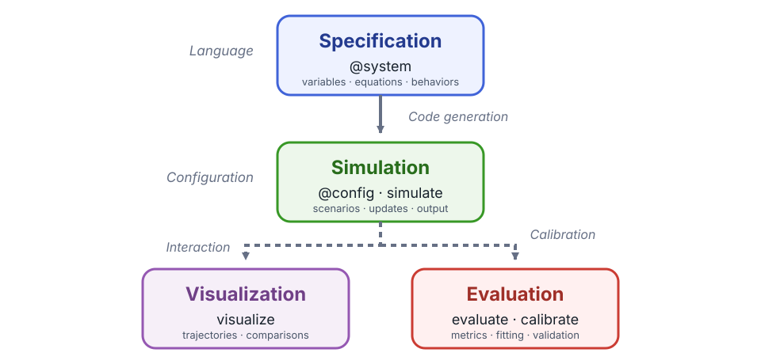
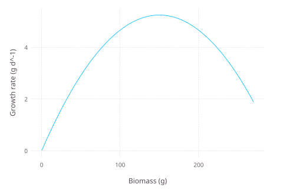

How Cropbox Works
The Quick Start runs a small logistic growth model. This page explains its declarations and introduces two more behaviors, without changing the growth equation.
Read a declaration
W(W, r, Wf): biomass => r * W * (1 - W / Wf) ~ accumulate(init = W0, u"g")Read this from left to right:
Wis the short variable name;biomassis its descriptive alias.(W, r, Wf)lists the values used in the equation.- The expression after
=>calculates a rate of change. accumulate, after~, integrates that rate over time.- The tags
init = W0andu"g"set the initial value and stored unit.
The dependency on W itself is intentional: growth depends on the current biomass. An accumulated state carries its value from one time step to the next. This differs from a circular set of algebraic equations that has no starting value.
Four common behaviors
A behavior describes how a variable gets its value. Most first models can be read using these four:
| Behavior | Meaning | Growth example |
|---|---|---|
preserve | Initialize a value and keep it. | The parameter r. |
track | Recalculate a value from its dependencies. | The current growth rate g. |
accumulate | Integrate a rate over time. | Biomass W. |
flag | Store whether a condition is true. | Whether biomass has reached a chosen threshold. |
We can name the rate separately and add a stopping condition:
using Cropbox
@system LogisticGrowth(Controller) begin
r: growth_rate => 0.05 ~ preserve(parameter, u"d^-1")
Wf: final_biomass => 300 ~ preserve(parameter, u"g")
W0: initial_biomass => 0.25 ~ preserve(parameter, u"g")
g(W, r, Wf): growth => r * W * (1 - W / Wf) ~ track(u"g/d")
W(g): biomass ~ accumulate(init = W0, u"g")
ready(W, Wf) => W >= 0.9Wf ~ flag
endg and W now expose the rate and the accumulated state separately. ready becomes true when biomass reaches 90% of Wf; this is a numerical threshold for the example, not a biological definition of maturity.
A tag modifies a behavior. Here parameter makes a preserved value configurable, init supplies the initial biomass, and unit tags declare dimensions. Additional behaviors and the complete tag rules belong in Behaviors and Tags.
Systems and dependencies
A system groups declarations into a reusable model component. The names in parentheses identify dependencies, so Cropbox can update a derived value after the values it needs. You do not have to write the update routine yourself.
Components can be combined with mixins or kept separate as child systems. Controller supplies a shared Context containing configuration and the clock. This lets components use the same scenario and model time. The next page, Systems and Composition, explains those two ways to combine systems.
Modeling workflow
The same three stages apply to a small example and a whole-crop model:

Specify the model
Declare variables, dependencies, equations, behaviors, and units with @system. The declaration defines a reusable model type; it does not run a simulation.
Configure and simulate
Apply a scenario without changing the equations:
config = @config (
LogisticGrowth => :r => 0.07,
Clock => :step => 1u"d",
)Config for 2 systems:
| LogisticGrowth | ||
| r | = | 0.07 d^-1 |
| Clock | ||
| step | = | 24 hr |
The plain value 0.07 acquires the unit declared by r. Using the system type as the key also allows parameter names and units to be checked.
result = simulate(LogisticGrowth;
config,
stop = :ready,
target = [:W, :g, :ready],
)
last(result, 3)| Row | time | W | g | ready |
|---|---|---|---|---|
| Quantity… | Quantity… | Quantity… | Bool | |
| 1 | 3192//1 hr | 265.918 g | 2.11468 g d^-1 | false |
| 2 | 3216//1 hr | 268.033 g | 1.99925 g d^-1 | false |
| 3 | 3240//1 hr | 270.032 g | 1.88819 g d^-1 | true |
Each call to simulate starts a fresh model. Here stop = :ready checks the model's own condition. Model Execution explains instances, time steps, stopping, and saved output.
Visualize and evaluate
The Quick Start plots biomass over time. Keeping g in the output also lets us ask a different question: at which biomass is growth fastest?
visualize(result, :W, :g;
kind = :line,
xlab = "Biomass",
ylab = "Growth rate",
legend = false,
)
The rate rises and then falls as W approaches Wf. This curve is read against biomass, not time.
When observations are available, evaluate compares them with model estimates and calibrate searches parameter ranges. Follow Evaluate and Calibrate Models when you reach that stage; neither is needed to understand the declarations above.
Continue learning
Continue with Systems and Composition, then Model Execution. Use DSL Syntax when you need a particular grammar form, rather than reading the full reference before the next example.